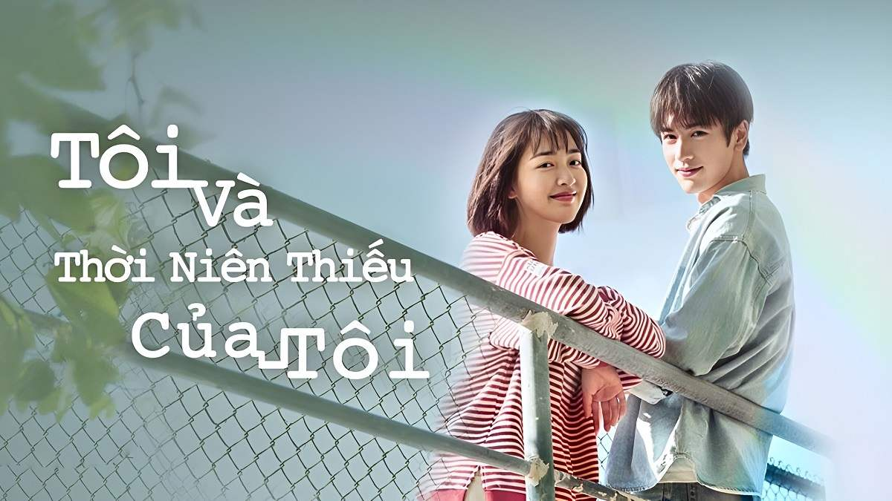

Làm Trái Tim Em Mỉm Cười
Làm Trái Tim Em Mỉm Cười là một bộ phim học đường Trung Quốc tình cảm hay nhất mới được ra mắt năm 2021. Câu chuyện trong phim xoay quanh một tình bạn đáng yêu và mối quan hệ lãng mạn giữa Cố Ngôn Lạc (do La Chính thủ vai) và Diệp Vị Miên (do Quý Mỹ Hàm thủ vai), một sinh viên nữ trong trường đại học. Cặp đôi này tình cờ gặp nhau trong khuôn khổ đại học. Nhưng do một sự cố đặc biệt, Vị Miên buộc phải đóng vai người yêu hợp đồng cho Ngôn Lạc. Từ đó, những tình huống dở khóc dở cười xuất hiện và đan xen giữa họ. Dù có hai tính cách trái ngược và quan điểm sống khác biệt, họ lại tìm thấy đối phương như một phần tự nhiên của số phận. Và mối tình thân này trở nên đáng trân trọng hơn bao giờ hết.
Go somewhereBí Mật Nơi Góc Tối
Bí Mật Nơi Góc Tối chuyển thể từ tiểu thuyết cùng tên của Nhĩ Đông Thố Tử. Câu chuyện diễn ra ở một ngôi trường cấp 3, ở đó có Chu Kỳ Việt là nam thần toàn năng và cô nàng lọ lem kiên cường bướng bỉnh đáng yêu Đinh Tiễn trở thành bạn cùng bàn. Ngày qua ngày đôi bạn ở bên nhau và phát hiện ra ưu điểm của đối phương. Gắn bó và giúp đỡ nhau trên con đường của tuổi trẻ mông lung và khó khăn đấy, cuối cùng viết nên một câu chuyện đẹp đẽ của một thời tuổi trẻ. Bí Mật Nơi Góc Tối là điều khó bày tỏ của mỗi một cô cậu thiếu niên đang ở ngưỡng cửa trưởng thành. Trong lòng ôm ấp một hình mẫu lý tưởng, soi sáng góc tối của chính mình, biến nó thành động lực để cố gắng.
Go somewhere
Vụng Trộm Không Thể Giấu
Vụng Trộm Không Thể Giấu là câu chuyện tình yêu ngọt ngào và lãng mạn của cô nàng Tang Trĩ (Triệu Lộ Tư) và anh chàng Đoàn Gia Hứa (Trần Triết Viễn). Tang Trĩ là một cô gái trẻ trung, hoạt bát và xinh đẹp. Cô thầm thích Đoàn Gia Hứa, bạn thân của anh trai mình, từ khi còn học cấp 3. Tuy nhiên, Tang Trĩ luôn giữ kín tình cảm của mình vì biết rằng Gia Hứa không hề có ý gì với cô.
Go somewhere
Tôi Và Thời Niên Thiếu Của Tôi
Tôi Và Thời Niên Thiếu Của Tôi được đánh giá là một trong những bộ phim học đường Trung Quốc hay và tình cảm nhất, mới được công chiếu trong năm 2021. Phim dựa trên cuốn tiểu thuyết 'Ai Có Thể Giữ Trăng Mật Bằng Tình Yêu'. Câu chuyện bắt đầu từ một tai nạn xe hơi đầy bất ngờ trong quá khứ, khiến nữ chính Lục Miêu (do Đặng Ân Hy thủ vai) đón nhận thêm một người anh trai.
Go somewhereĐoàn Thị Ngọc - CN22TC3.6